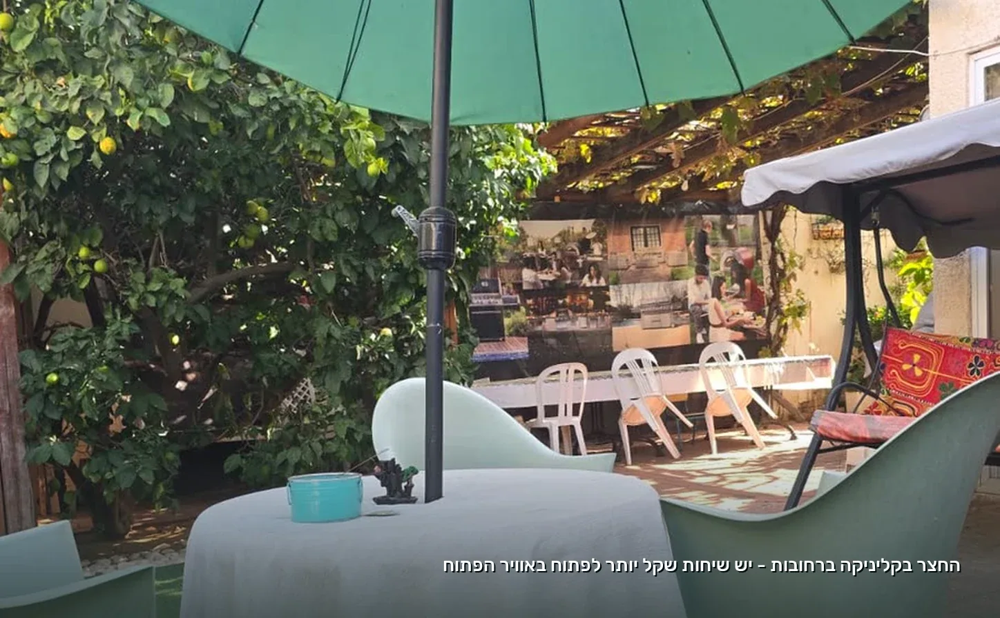
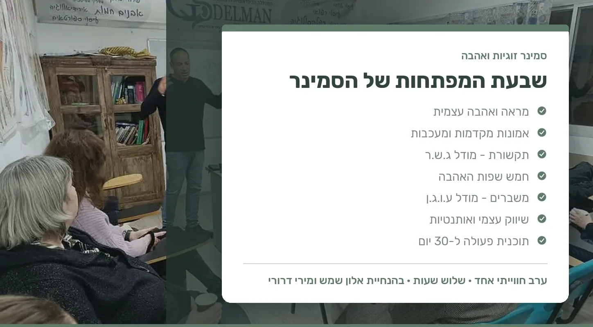

An ordinary evening in the living room. You're both home, the quiet seems pleasant enough, each of you on your own phone. Or maybe the opposite: the same argument yet again, starting with the laundry or someone being late and ending with a slammed door. Either way, somewhere in the background, the same question hovers, one that's hard to say out loud:
We love each other. So why does it feel so hard?
And if you're still looking for a relationship, the question takes a different form: why isn't it happening? Why did another date end politely with no follow-up, and why does it seem like it works out for everyone except us?
Why do good people in particular struggle in relationships?
Ask your friends and they'll tell you: there are no good people left, everyone's taken, there's no time, fear of commitment, the apps ruined everything. Each of these answers holds a half-truth. But when you look closely at dozens of couples and singles, a surprising common thread emerges:
Most people have no problem finding love. They struggle to keep it.
Think about it: we know how to choose a profession, but no one taught us how to hang in there at work through a hard stretch. We know how to choose an apartment, but are less good at maintaining it over the years. And relationships? At school they taught us equations, grammar and English. No one taught us how to fight well, how to really listen, how to set a boundary without hurting, how to cope with rejection, or how to apologize without feeling we've lost.
Maybe the problem isn't that we don't know how to love. Maybe no one ever taught us how.
And it's worth learning. One of the longest-running studies in the world, the Harvard Study of Adult Development, which has been running since 1938, found that the quality of our close relationships is one of the strongest predictors of health, happiness and longevity. More than money, more than career, more than fame.
The fight beneath the fight
Take one familiar moment: he was late. Again. She's quiet all evening, and in the end it bursts out: "You're never on time!"
On the surface, they're fighting about being late. But let's break this moment into four layers:
- The event: he was twenty minutes late.
- The interpretation: "I'm not important enough to him."
- The feeling: hurt.
- The reaction: anger.
The argument happens on the first layer, but the pain sits in the second and third. People almost never fight about the event; they fight about what it means. That's why the exact same lateness can pass quietly for one couple and spark a storm for another.
This is also where the good news lies: you can't always control events, but you can learn to recognize the interpretation, check it against reality, and choose a response that brings you closer instead of pushing you apart. It's a skill. And like any skill, you practice it.

Loving, but not feeling loved
There's another quiet gap that wears down good couples: he works hard, fixes, takes care of things, repairs. To him, every one of these actions shouts "I love you." And her? She's waiting for one kind word, and says "You never tell me you love me." They're both right. He gives love in one language, she looks for it in another.
Sometimes the problem in a relationship isn't that there's no love. The problem is that it isn't coming through on a channel the other person picks up. Kind words, quality time, small gifts, acts of help, touch: each of us has a language in which love truly reaches us. And the important question in a relationship isn't only "how much do I love," but "does the person in front of me feel it."
And what if only one of you is on board?
This may be the most common question of all: "I want to work on the relationship, but my partner won't hear of it." And the answer is surprising: you can start on your own.
A relationship is a system. When one side changes the way they react, interpret and talk, the whole system shifts. When blame is replaced by sharing a feeling, when three days of silence are replaced by "I was hurt and I need a moment," the other side suddenly has something different to respond to. It isn't magic, and not every relationship will be saved this way. But almost every relationship benefits from one person who starts doing real inner work.
And those still looking for a relationship? This inner work is exactly the difference between showing up to a date as if it were an exam, and showing up curious, calm and present. Between trying to convince someone to choose us, and checking together whether we're right to choose each other.
Three small steps you can start this week
- A ten-minute talk. Once a week, no screens and no "handling the day's business." Five minutes each. No interrupting, no correcting, no solving, just listening. At the end, each of you says: "What I heard from you is...".
- One weekly question. "What could I do this week that would make you feel a little more loved?" And then the truly hard rule: you don't argue with the answer.
- An if-then plan. Instead of "I'll try not to blow up," you decide in advance: if I feel flooded in an argument, then I'll ask for a break and say when we'll come back to talk. A decision made in advance survives even the stormy moments.

One evening, seven keys
For those who want to take this further, that's exactly what the "Love and Relationships Seminar" was built for: a three-hour experiential evening led by Alon Shemesh, emotional therapist and personal development coach, together with Miri Drori, a facilitator of groups and workshops for growth and change (both are NLP Masters).
The seminar goes through seven keys: self-love and self-image, the beliefs that run us from the inside, communication that connects instead of pushing apart, the five love languages, handling crises well, authenticity in dating and in a relationship, and finally, a practical 30-day action plan you take home. Not a lecture where you sit and nod, but an evening with live practice, guided imagery and inspiration cards, suited both to couples and to those still on their way to a relationship.
Details on the Love and Relationships Seminar and the other workshops and talks
When should you seek professional help?
If the distance, sadness or fighting goes on and weighs on your sleep, your functioning or your children, there's no need to wait for a collapse. A conversation with the right professional can open a door that seemed locked.
And it's important to say clearly: not every relationship needs to be saved. When there is violence, humiliation, control or fear, safety comes before any work on the relationship. In such situations, contact the Ministry of Welfare's helpline for victims of violence at 118 (available 24 hours), or the support centers at 1202 (women) and 1203 (men).
A good relationship doesn't begin when you meet the right person. It begins when we become a healthier version of ourselves, and that's something you can start today, with the person we bring into the relationship.